Foto e licenza
Valerio Capello at English Wikipedia · Wikimedia Commons · CC BY-SA 3.0
Foto della specialità, non necessariamente del locale consigliato. Ridimensionata e compressa; ritaglio nella visualizzazione.
Ricette napoletane e specialità della Campania
25 specialità da riconoscere, indirizzi da esplorare e mercati dove incontrare i sapori del posto.
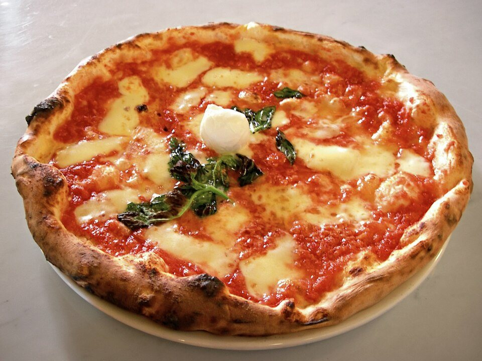
Valerio Capello at English Wikipedia · Wikimedia Commons · CC BY-SA 3.0
Foto della specialità, non necessariamente del locale consigliato. Ridimensionata e compressa; ritaglio nella visualizzazione.
Piatti della città e prodotti del suo territorio: la descrizione indica quando una specialità arriva da un’altra zona della regione. Da provare da segnala una proposta documentata; Per questa tradizione indica un locale pertinente, con menu da verificare. Puoi anche cercare il piatto sulla mappa.
Il browser non consente di conservare la lista.
Valerio Capello at English Wikipedia · Wikimedia Commons · CC BY-SA 3.0
Foto della specialità, non necessariamente del locale consigliato. Ridimensionata e compressa; ritaglio nella visualizzazione.
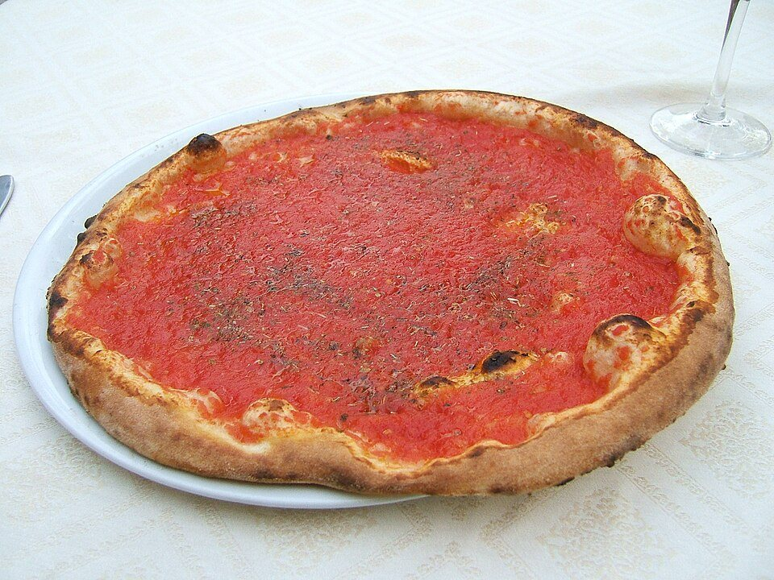
Peter Van den Bossche from Mechelen, Belgium · Wikimedia Commons · CC BY-SA 2.0
Foto della specialità, non necessariamente del locale consigliato. Ridimensionata e compressa; ritaglio nella visualizzazione.
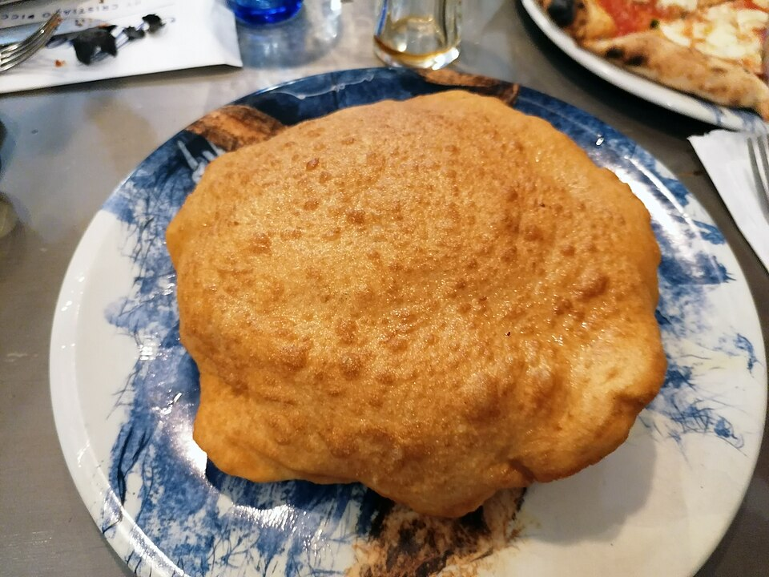
Horcrux · Wikimedia Commons · CC BY-SA 4.0
Foto della specialità, non necessariamente del locale consigliato. Ridimensionata e compressa; ritaglio nella visualizzazione.
Cibo di strada
Impasto fritto ripieno, tradizionalmente con ricotta e cicoli.
Da provare da La Masardona
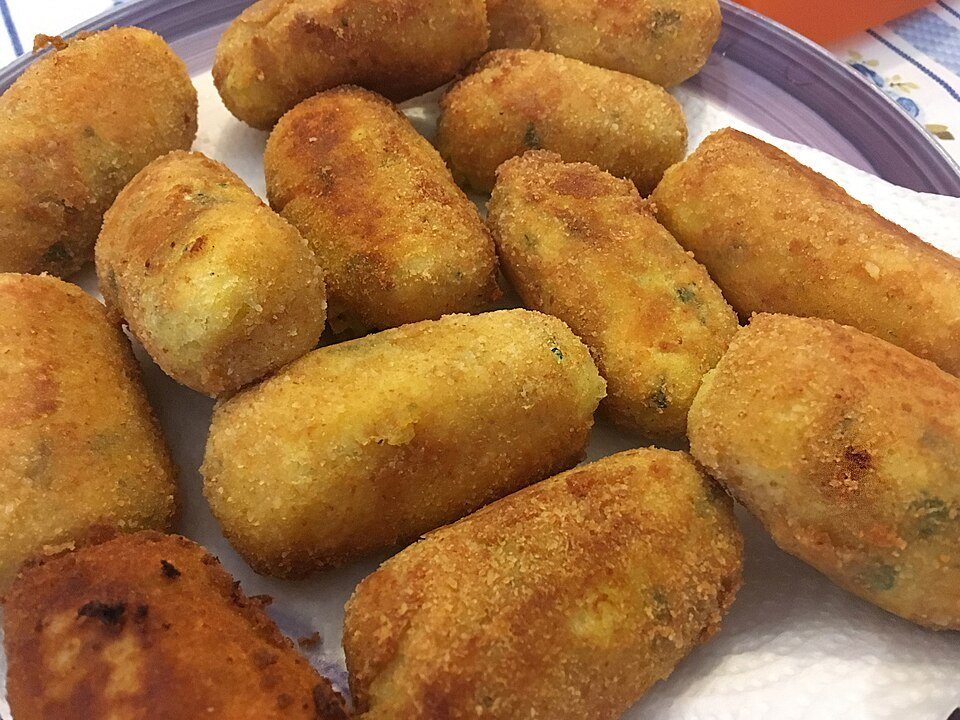
Enzo Rippa · Wikimedia Commons · CC BY-SA 4.0
Foto della specialità, non necessariamente del locale consigliato. Ridimensionata e compressa; ritaglio nella visualizzazione.
Cibo di strada
Crocchette di patate, spesso con cuore filante.
Per questa tradizione La Masardona
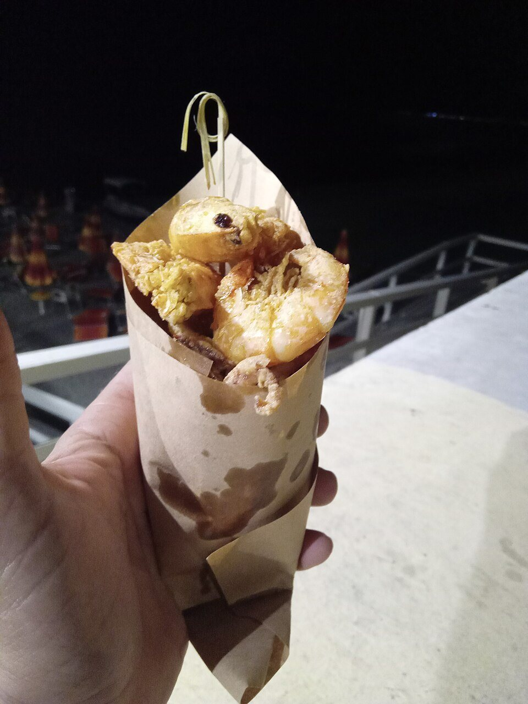
Nicholas Gemini · Wikimedia Commons · CC BY-SA 4.0
Foto della specialità, non necessariamente del locale consigliato. Ridimensionata e compressa; ritaglio nella visualizzazione.
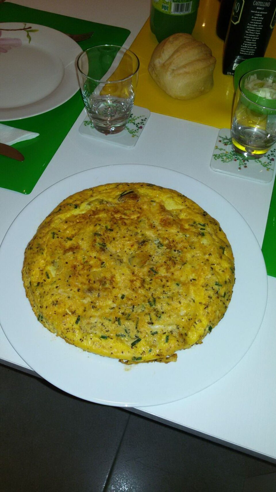
Albertomos · Wikimedia Commons · CC BY-SA 4.0
Foto della specialità, non necessariamente del locale consigliato. Ridimensionata e compressa; ritaglio nella visualizzazione.
Cibo di strada
Pasta e uova cotte insieme, anche da portare via.
Per questa tradizione Mimì alla Ferrovia
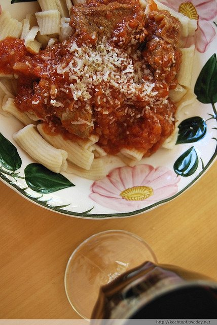
[2] · Wikimedia Commons · CC BY-SA 2.0
Foto della specialità, non necessariamente del locale consigliato. Ridimensionata e compressa; ritaglio nella visualizzazione.
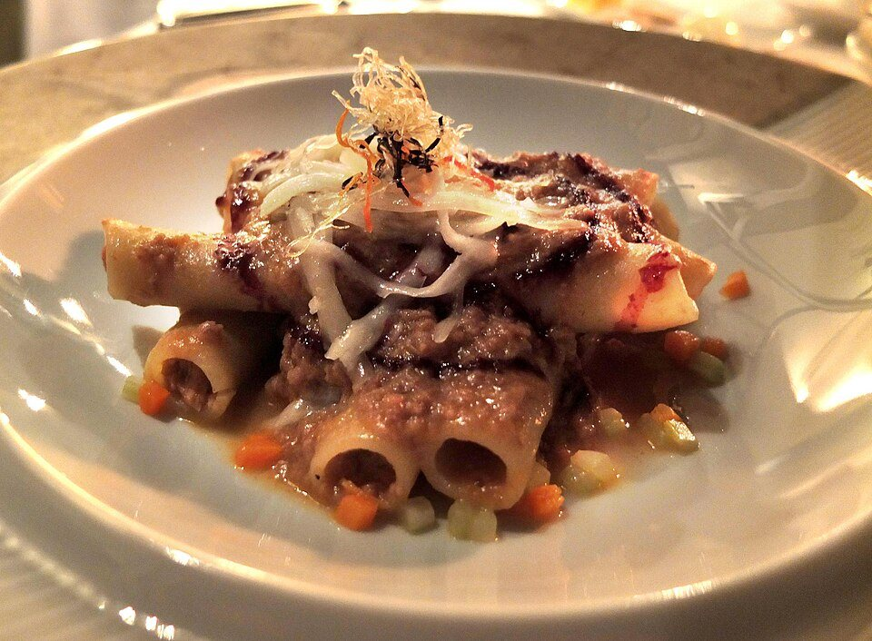
Darouet · Wikimedia Commons · CC BY-SA 3.0
Foto della specialità, non necessariamente del locale consigliato. Ridimensionata e compressa; ritaglio nella visualizzazione.
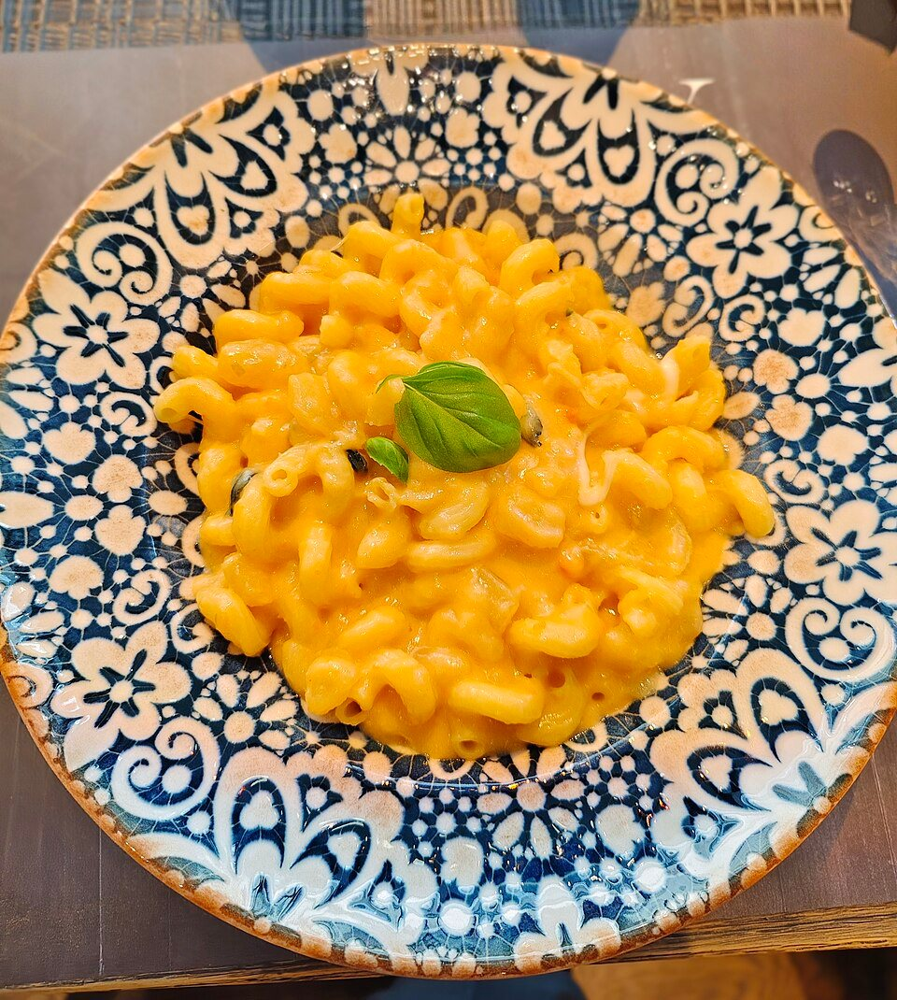
Mojmir Churavy · Wikimedia Commons · CC0
Foto della specialità, non necessariamente del locale consigliato. Ridimensionata e compressa; ritaglio nella visualizzazione.
A tavola
La versione cremosa con provola.
Per questa tradizione Mimì alla Ferrovia
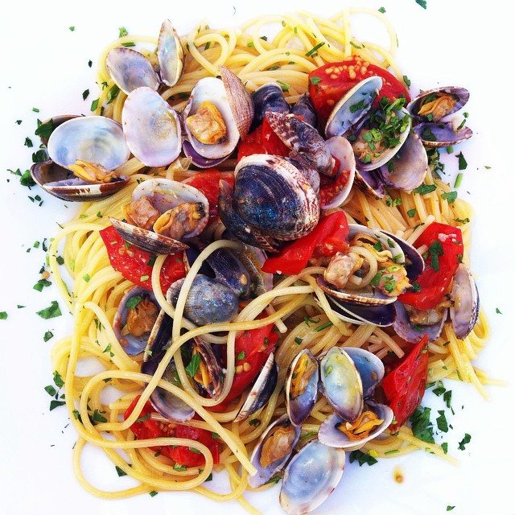
Popo le Chien · Wikimedia Commons · CC BY-SA 4.0
Foto della specialità, non necessariamente del locale consigliato. Ridimensionata e compressa; ritaglio nella visualizzazione.
A tavola
Un classico della cucina del golfo.
Per questa tradizione Mimì alla Ferrovia
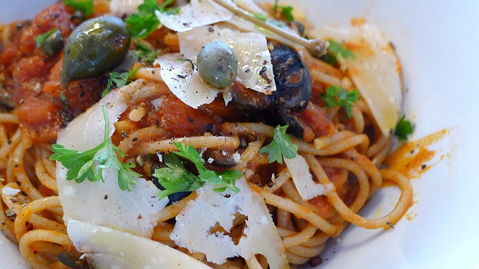
Kaifredriksen · Wikimedia Commons · CC BY-SA 3.0
Foto della specialità, non necessariamente del locale consigliato. Ridimensionata e compressa; ritaglio nella visualizzazione.
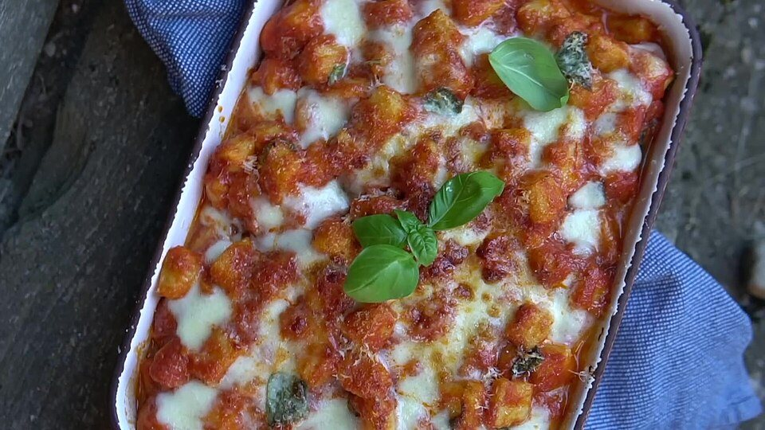
Davide Zambelli · Wikimedia Commons · CC BY 3.0
Foto della specialità, non necessariamente del locale consigliato. Ridimensionata e compressa; ritaglio nella visualizzazione.
A tavola
Dalla penisola sorrentina: pomodoro e mozzarella gratinati.
Per questa tradizione Mimì alla Ferrovia
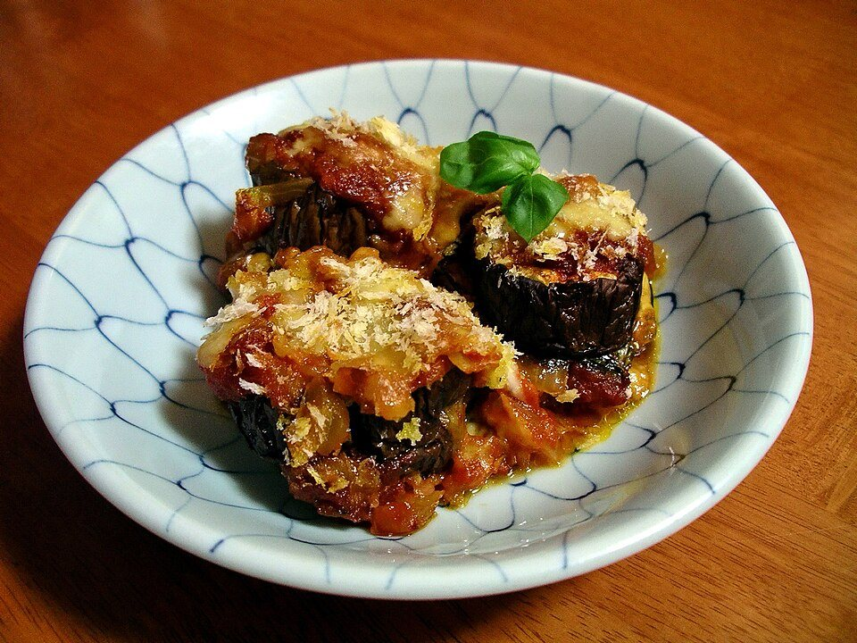
Flickr.com user "Blue Lotus" · Wikimedia Commons · CC BY 2.0
Foto della specialità, non necessariamente del locale consigliato. Ridimensionata e compressa; ritaglio nella visualizzazione.
A tavola
Melanzane, pomodoro e formaggio a strati.
Per questa tradizione Mimì alla Ferrovia
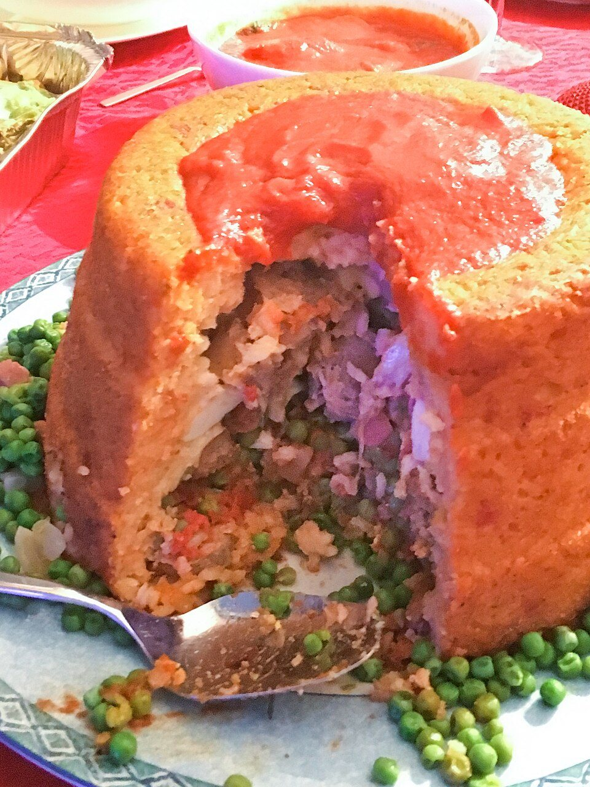
Ruthven · Wikimedia Commons · CC0
Foto della specialità, non necessariamente del locale consigliato. Ridimensionata e compressa; ritaglio nella visualizzazione.
A tavola
Timballo di riso delle occasioni speciali.
Per questa tradizione Mimì alla Ferrovia
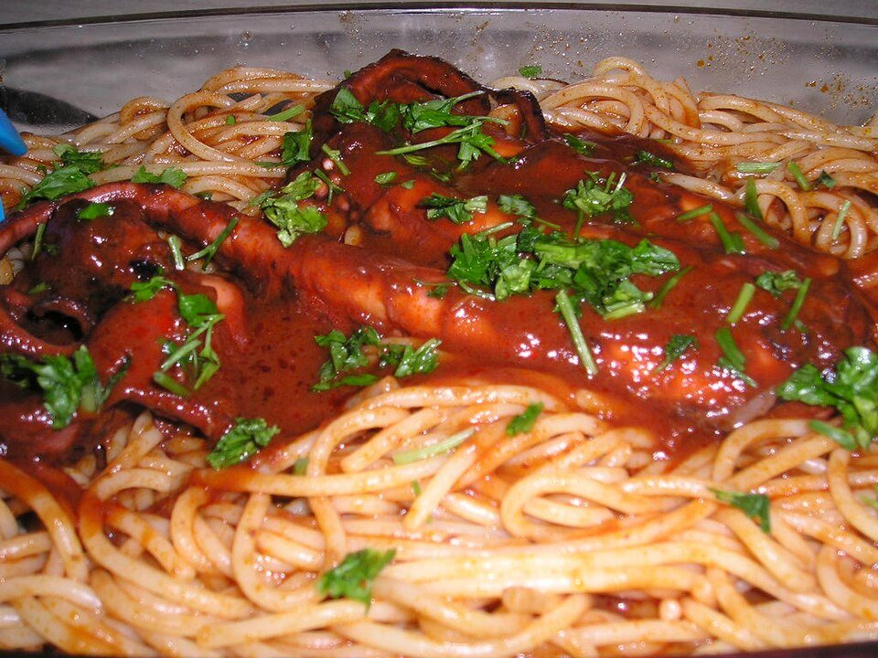
ivana · Wikimedia Commons · CC BY 2.0
Foto della specialità, non necessariamente del locale consigliato. Ridimensionata e compressa; ritaglio nella visualizzazione.
A tavola
Polpo in umido con pomodoro e olive.
Per questa tradizione Mimì alla Ferrovia
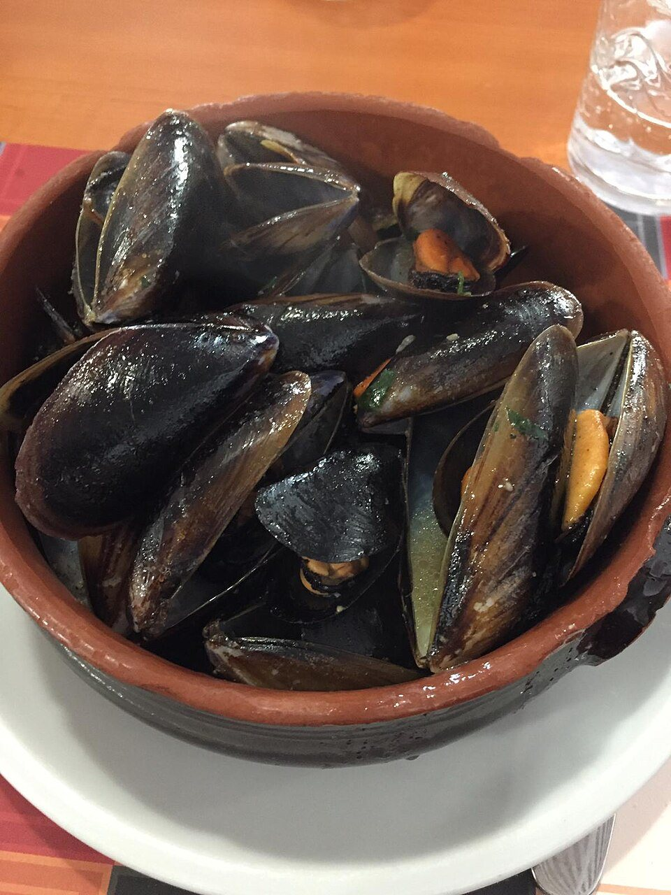
Egibe · Wikimedia Commons · CC BY-SA 4.0
Foto della specialità, non necessariamente del locale consigliato. Ridimensionata e compressa; ritaglio nella visualizzazione.
A tavola
Cozze, pepe e il loro fondo di cottura.
Per questa tradizione Mimì alla Ferrovia
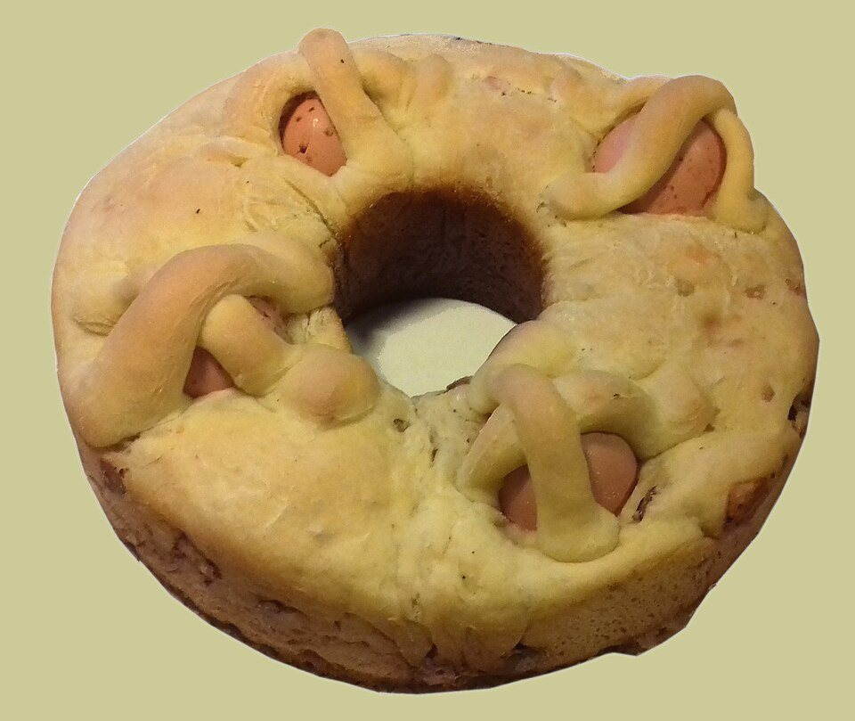
Blackcat · Wikimedia Commons · CC BY-SA 4.0
Foto della specialità, non necessariamente del locale consigliato. Ridimensionata e compressa; ritaglio nella visualizzazione.
Cibo di strada
Ciambella salata pasquale con salumi e formaggio.
Per questa tradizione Scaturchio
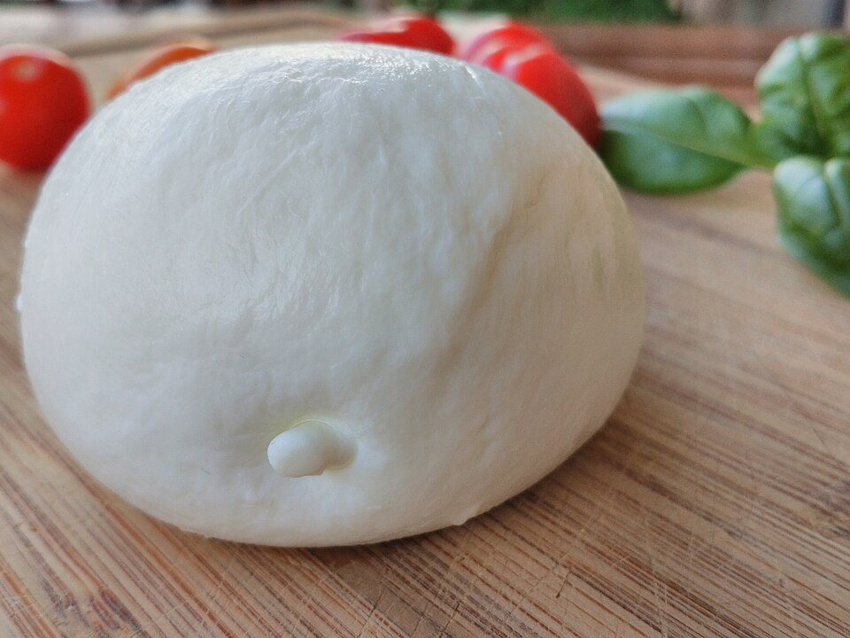
Popo le Chien · Wikimedia Commons · CC BY-SA 3.0
Foto della specialità, non necessariamente del locale consigliato. Ridimensionata e compressa; ritaglio nella visualizzazione.
Prodotti e botteghe
Specialità campana: chiedi provenienza e produzione.
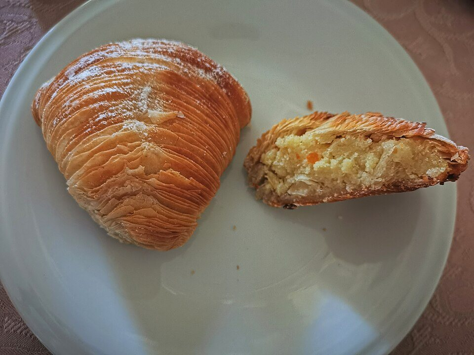
Saggittarius A · Wikimedia Commons · CC BY-SA 4.0
Foto della specialità, non necessariamente del locale consigliato. Ridimensionata e compressa; ritaglio nella visualizzazione.
Dolci e pause
Sfoglie croccanti e ripieno di semolino e ricotta.
Da provare da Scaturchio
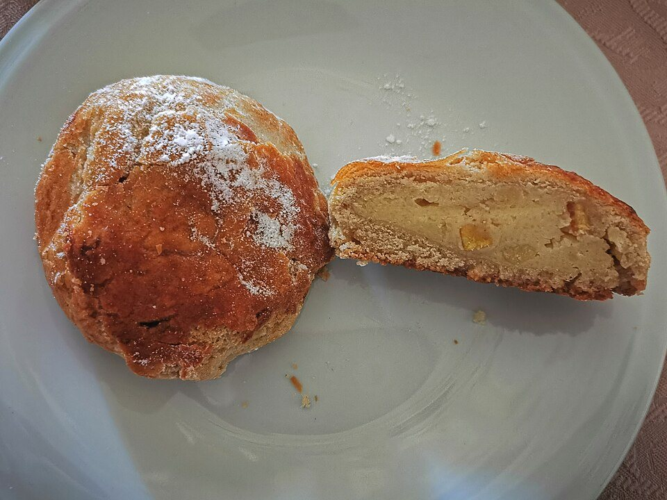
Saggittarius A · Wikimedia Commons · CC BY-SA 4.0
Foto della specialità, non necessariamente del locale consigliato. Ridimensionata e compressa; ritaglio nella visualizzazione.
Dolci e pause
La versione di pasta frolla, dal guscio morbido.
Da provare da Scaturchio
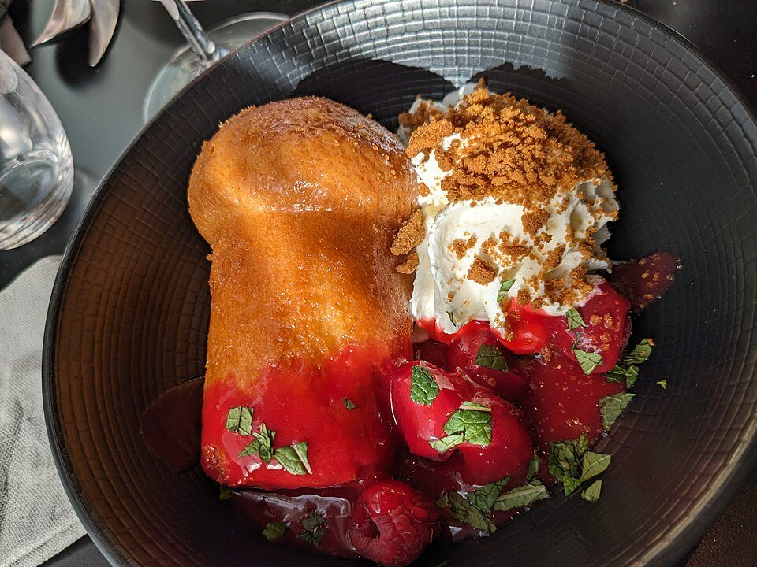
Romainbehar · Wikimedia Commons · CC0
Foto della specialità, non necessariamente del locale consigliato. Ridimensionata e compressa; ritaglio nella visualizzazione.
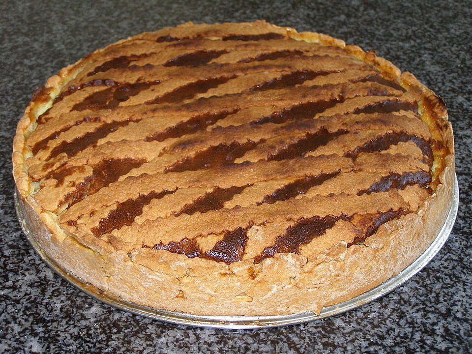
Mattia Luigi Nappi (Mattia Luigi Nappi) · Wikimedia Commons · CC BY-SA 3.0
Foto della specialità, non necessariamente del locale consigliato. Ridimensionata e compressa; ritaglio nella visualizzazione.
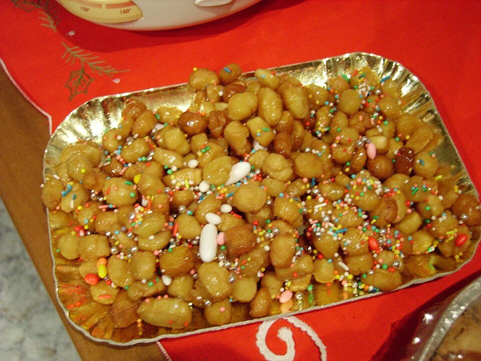
Frameme~commonswiki · Wikimedia Commons · CC BY-SA 3.0
Foto della specialità, non necessariamente del locale consigliato. Ridimensionata e compressa; ritaglio nella visualizzazione.
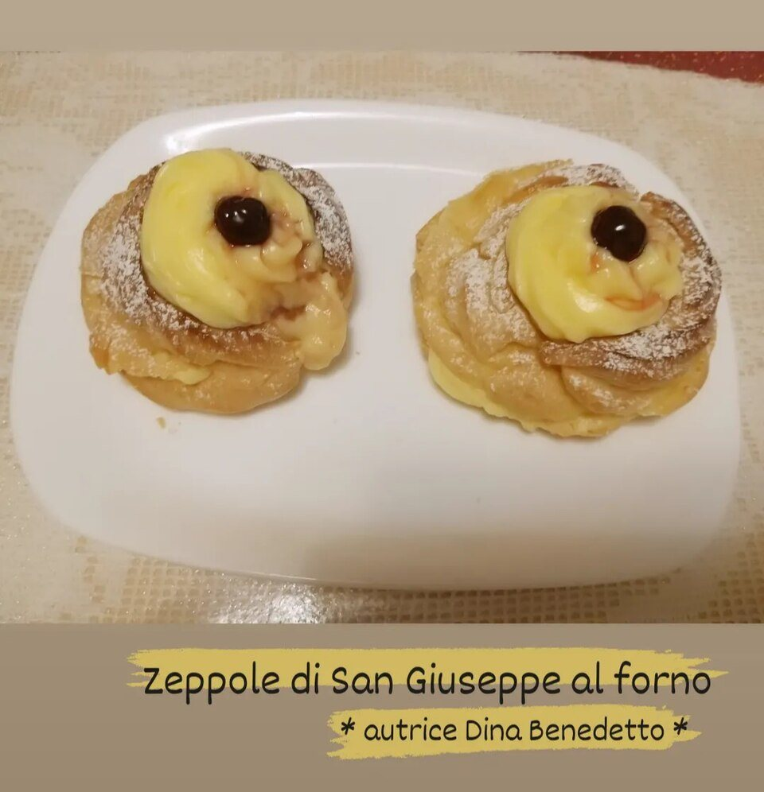
DinaBenedettoFerrandina · Wikimedia Commons · CC BY-SA 4.0
Foto della specialità, non necessariamente del locale consigliato. Ridimensionata e compressa; ritaglio nella visualizzazione.
Dolci e pause
Crema e amarena, soprattutto intorno al 19 marzo.
Per questa tradizione Scaturchio
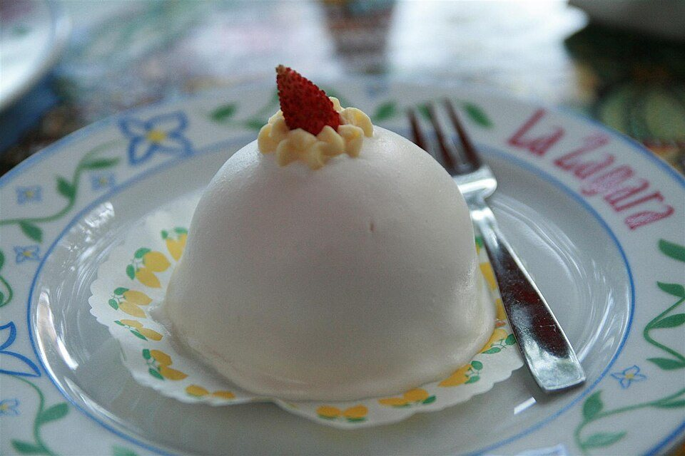
dags 1974 · Wikimedia Commons · CC BY 2.0
Foto della specialità, non necessariamente del locale consigliato. Ridimensionata e compressa; ritaglio nella visualizzazione.
Dolci e pause
Dolce della costa sorrentina e amalfitana.
Per questa tradizione Scaturchio
Nessun assaggio con questi filtri. Scegli Azzera.
Una selezione editoriale basata su menu, botteghe e guide consultabili, non una classifica assoluta. Verifica sede, menu, disponibilità e prenotazione sul canale del locale.
Via dei Tribunali, centro storico
Un indirizzo per la pizza napoletana tradizionale.
Zona Case Nuove; controlla la sede sul sito
Il canale del locale rimanda alle sedi e alla pizza fritta.
Centro storico; scegli la sede sul sito
Ragù e genovese sono il centro della proposta.
Via Alfonso d’Aragona 21
Cucina partenopea al tavolo, con proposte che cambiano.
Piazza San Domenico Maggiore
Pasticceria per esplorare babà, sfogliatelle e dolci delle ricorrenze.
Vai per osservare, fare la spesa o scegliere una piccola sosta. Giorni, orari e singoli operatori possono cambiare: trovi i riferimenti accanto a ogni mercato.
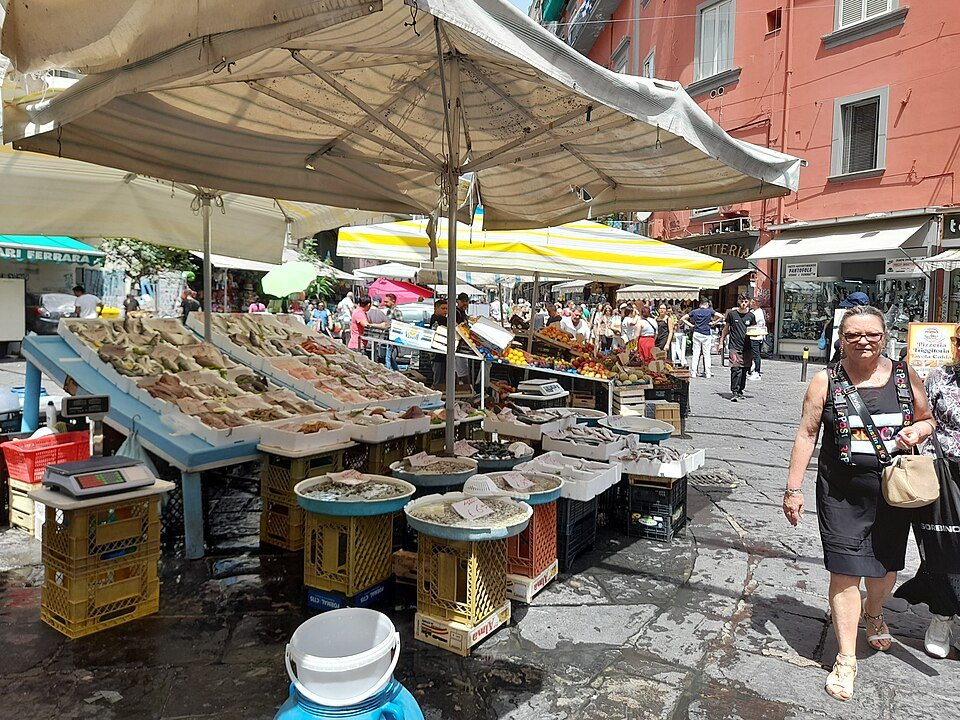
Argo Navis · Wikimedia Commons · CC BY-SA 4.0
Foto della specialità, non necessariamente del locale consigliato. Ridimensionata e compressa; ritaglio nella visualizzazione.
Pignasecca / Montesanto
Pescherie, frutta e cibo da strada tra i vicoli. La zona è interessata da riqualificazioni: verifica sul posto la posizione dei banchi.
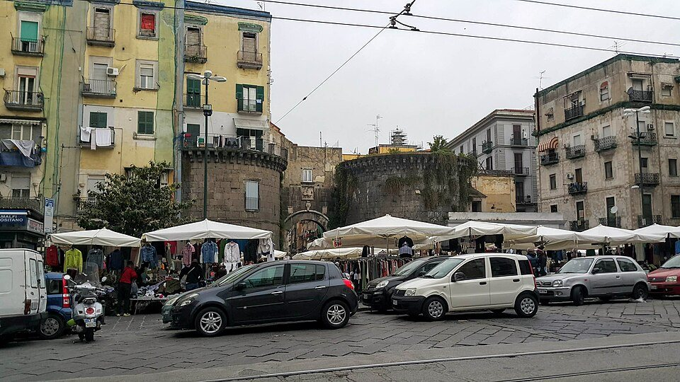
Rémy Lee · Wikimedia Commons · CC BY-SA 4.0
Foto della specialità, non necessariamente del locale consigliato. Ridimensionata e compressa; ritaglio nella visualizzazione.
Via Nolana / Porta Nolana
Mercato di strada noto per il pesce, con frutta e alimentari. Il pesce esposto è materia prima, non sempre cibo pronto da mangiare.
Chiedi ingredienti e allergeni al personale: ricette, ripieni e fritture condivise cambiano da un locale all’altro. Per pesce, verdure e dolci delle feste, la stagione conta. Prima di ordinare chiarisci prezzo, peso e servizio al tavolo.
Ricerca editoriale del 16 ottobre 2026. Le fotografie identificano il cibo e il mercato, non certificano il menu di un esercizio. I derivati mantengono la licenza della fotografia. Autore, licenza e originale sono indicati in Foto e licenza accanto a ciascuna immagine.

.jpg){kind=link}


.jpg){kind=link}